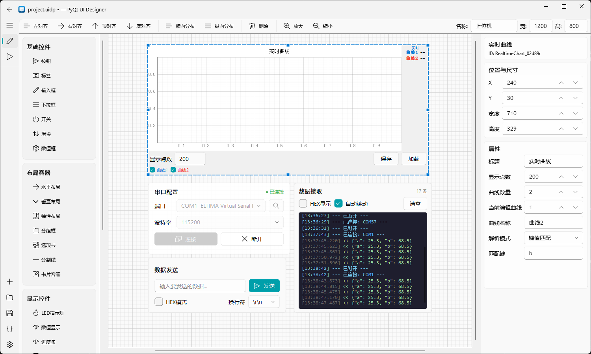
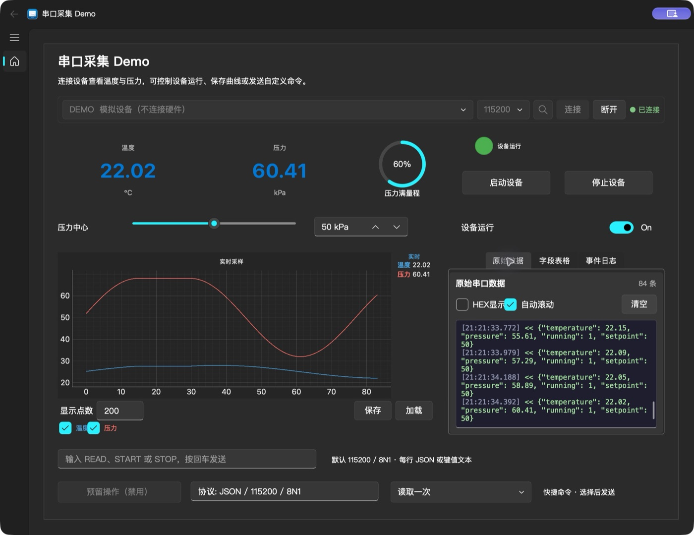

data binding
接收：数据绑定
支持键值匹配、JSON 路径、HEX 字节偏移和 Modbus RTU 寄存器解析；数值、LED、进度条、仪表盘和曲线按绑定键更新。
拖拽设计 · 数据绑定 · 一键打包
把控件拖到画布上，配置属性并绑定串口数据，在设计器里直接连接设备预览运行。调通后一键导出完整的 Python 项目，或用 Nuitka 打包为 Windows exe / macOS .app。
下载信息来自 GitHub Releases，页面会自动检查最新稳定版。

零代码搭建界面拖拽控件、配置属性和绑定键即可
设计器内连接设备预览运行时直接收发串口数据
导出即可独立运行生成 Python 项目，可打包为 exe / .app
工作流程
显示类控件按绑定键从串口数据中取值，交互类控件按发送模式组帧下发。设计器预览与导出程序共用同一份串口和解析实现，预览里调通的行为导出后保持一致。
data binding
支持键值匹配、JSON 路径、HEX 字节偏移和 Modbus RTU 寄存器解析；数值、LED、进度条、仪表盘和曲线按绑定键更新。
commands
按钮、开关、滑块等控件可按文本、HEX 或 Modbus 模式发送，命令模板用 {value} 占位符代入控件当前值。
RX每行一帧，按绑定键取值
temperature=25.3,humidity=68.5
{"temperature": 26.42, "running": 1}EXPORT导出的独立项目
my-app/
├── main.py
├── ui.py
├── serial_handler.py
├── data_binding.py
└── theme_support.py
$ python main.py功能介绍
面向串口设备的常见上位机需求：参数显示、状态指示、控制命令、实时曲线和数据记录，都能在画布上完成配置。
拖拽式画布，支持网格吸附、左右顶底对齐与横纵分布，画布尺寸自由设置并可缩放；工程保存为 .uidp 文件。
基础、布局、显示、图表和复合控件，包括 LED 指示灯、仪表盘、进度环、数据表格，以及串口配置、收发和 Modbus 配置卡片。
自动扫描端口，可设波特率、数据位、校验位、停止位和流控；支持行文本、HEX 帧和 Modbus RTU 解析，Modbus 响应校验 CRC。
文本模式可选换行符，HEX 模式支持帧头帧尾和数据类型打包，Modbus 模式自动构建 RTU 帧并支持轮询。
多通道曲线带游标，约 33 ms 批量刷新；完整采样历史可导出为 CSV / JSON，也可重新加载查看。
导出可独立运行的 Python 项目；内置 Nuitka 一键打包，实时显示编译输出，完成后自动清理缓存并压缩为 zip。
导出示例
仓库中的 demo 包含可编辑的 .uidp 工程、完整导出代码和模拟串口设备，不接硬件也能体验温度/压力采集与命令发送。

最新稳定版 0.1.3
各平台 zip 均内置 Python 和 Qt，解压即可运行，无需另装 Python。
解压后运行 main.exe。适用于 Windows 10 / 11。
适用于 M 系列芯片的 Mac，解压后打开 PyQt UI Designer.app。
适用于 Intel 芯片的 Mac，解压后打开 PyQt UI Designer.app。
下载按钮直接连接 GitHub Release 附件，每个包都提供 .zip.sha256 校验文件。安装包暂未签名：Windows 出现 SmartScreen 提示时点击“更多信息 → 仍要运行”；Mac 版未做 Developer ID 签名与公证。应用内“一键打包”仍需本机 Python 与 C/C++ 编译工具。 从源码运行 使用说明 查看源代码